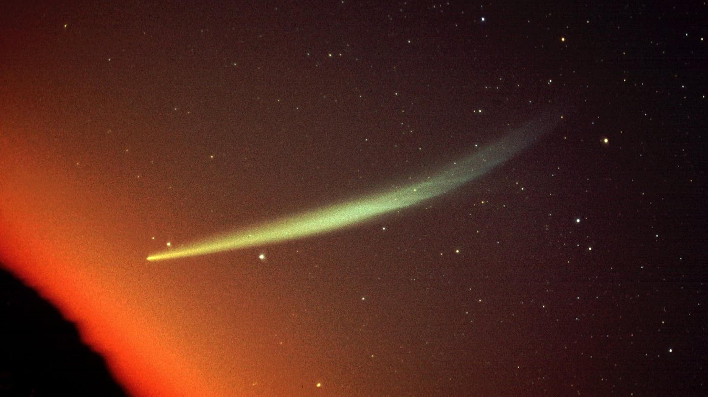

Кометы
1. Как выглядит
На небе появляется размытое пятнышко, похожее на туманную звезду. От него отходит светящийся хвост — длинная полоса, направленная в сторону от Солнца. Голова кометы (её ядро и оболочка) может быть белого, голубоватого или желтоватого цвета. Хвост бывает разным: прямой и узкий (газовый) или широкий и изогнутый (пылевой). У самых ярких комет хвост тянется на десятки градусов — от горизонта почти до зенита. Яркость может соперничать с Венерой. Комета медленно ползёт по небу от ночи к ночи, меняя очертания.
2. История обнаружения и наблюдений
Древние люди боялись комет и считали их предвестниками бед. В 1066 году комета Галлея появилась перед завоеванием Англии — её изобразили на гобелене из Байё. Первым, кто понял, что кометы возвращаются, был английский астроном Эдмунд Галлей в 1705 году. Он вычислил, что комета 1682 года — это та же самая, что наблюдалась в 1531 и 1607 годах, и предсказал её возвращение в 1758 году. Комету назвали его именем. Самую яркую комету XX века — комету Хейла-Боппа — открыли в 1995 году два американских астронома-любителя. А комету Макнота в 2007 году видели даже днём.
3. Природа явления
Комета — это грязная снежная глыба размером от нескольких сотен метров до десятков километров. Она летит по вытянутой орбите вокруг Солнца. Когда комета приближается к светилу, её лёд нагревается и превращается сразу в газ (сублимация). Вместе с газом вылетают пылинки. Вокруг ядра образуется огромная оболочка — кома, а поток газа и пыли вытягивается в хвост под действием солнечного ветра и давления света.
4. Связь с культурой и мифами
В древности кометы называли «волосатыми звёздами» (от греческого «кометес» — волосатый). В Китае их считали метлами, которыми небесные духи выметают старые порядки. После появления кометы часто начинали войны или умирали правители, поэтому кометы считали плохим знаком. У скандинавов существовало поверье, что это искры из огненного мира Муспелльхейм. В Средние века церковь объявляла кометы знамениями Божьего гнева.
5. Условия для наблюдения
Лучше всего комету видно вдали от городского света, в безлунную ночь. Нужен широкий обзор горизонта, особенно в той стороне, где находится Солнце — комета ярче всего недалеко от него. Яркие кометы заметны даже невооружённым глазом, но в бинокль видно гораздо больше деталей: очертания хвоста и неоднородность головы. Оптимальное время — сразу после захода Солнца или перед восходом, когда комета видна на тёмном небе.
6. Редкость и периодичность
По-настоящему яркая комета, видимая без телескопа, появляется в среднем раз в 5–10 лет. Очень яркая («большая комета») — раз в 20–30 лет. А комета, которая видна даже днём, случается раз в столетие. Вот, например, комета 2024 года C/2023 A3 (Цзыцзиньшань-ATLAS) была яркой, но не достигла уровня «великой». Последняя великая комета — Макнота (2007). Следующая может появиться в любой момент.
